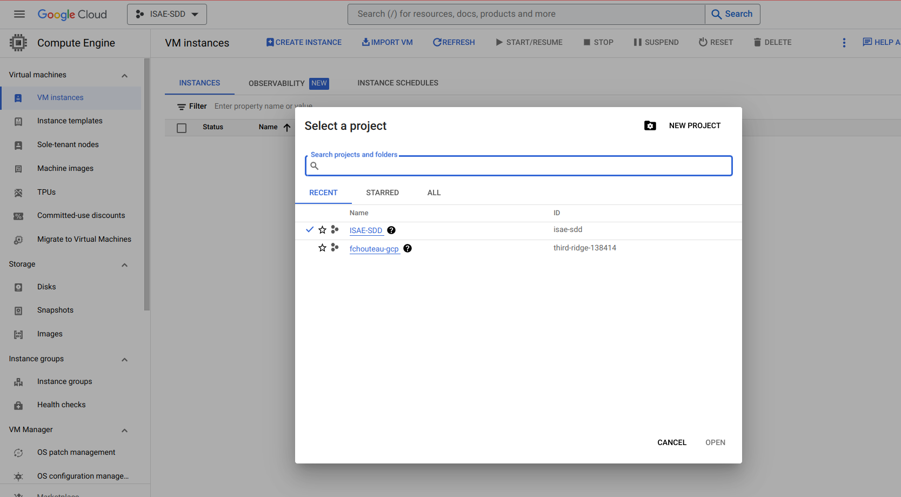
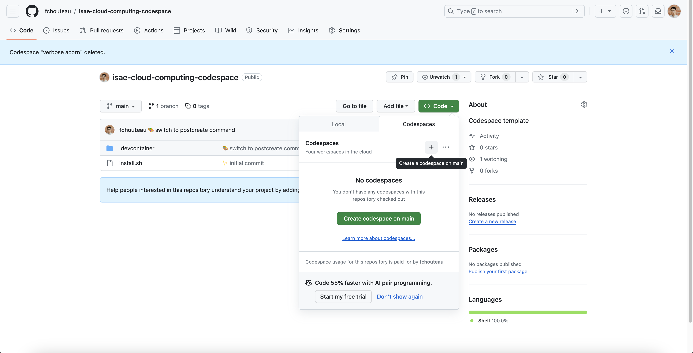
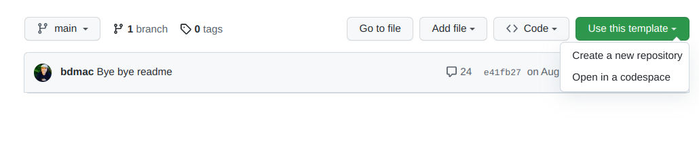
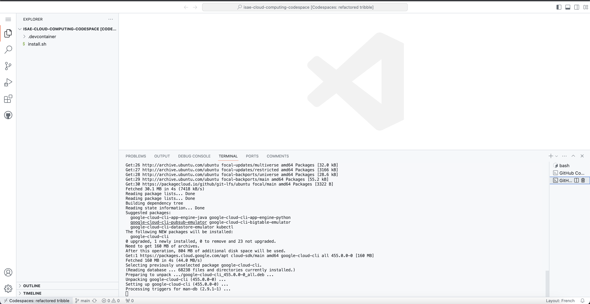
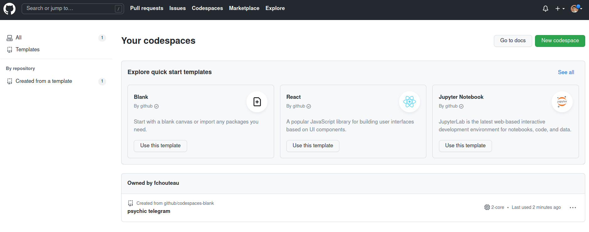
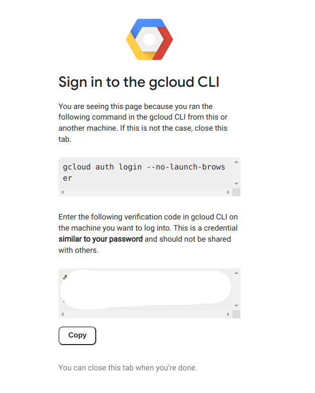
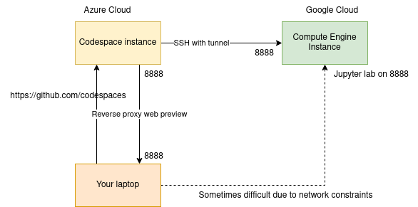
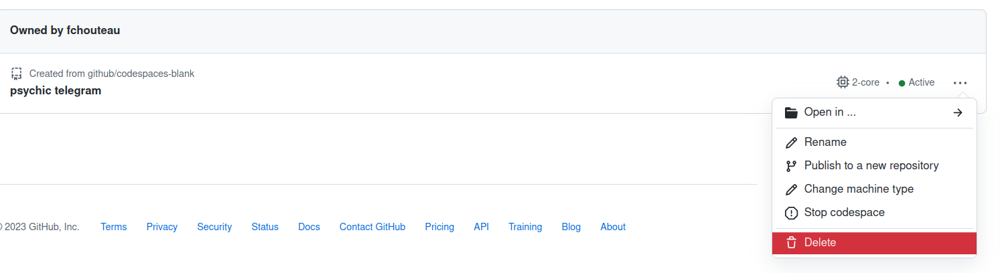

GCP Hands On, first VMs, Google Cloud Storage🔗
0. Abstract🔗
!! abstract In this hands on you will configure your GCP account, the google cloud SDK and access the cloud console using Google Cloud Shell, You will also discover a very useful tool, a managed jupyter notebook service from google named Google Colab which may be very important for your future developments this year
Warning
Some things may only work on eduroam or in 4G...
Warning
Don't forget to shutdown everything after !
Note
When the TP says to replace "{something}" with a name, don't include the brackets so write “yourname"
1a. Create your GCP Account🔗
Note
It is possible that you don't have your credits yet, so keep this in mind for when you will be receiving them Skip this for now
Note
If you don't have gcp credits yet, put a gmail adress in this document to get access to the shared one
- Create an account within Google cloud Platform using your ISAE e-mail
- Use the code given by Dennis to get your free credits
- You should have a free tier available to you as well as coupons
- From the interface you should create a project with a name of your choice
1b. Selecting the general gcp project🔗
Note
If you don't have your project yet you should be added to a global ISAE-SDD called sdd2324 project
Select it in the interface
You should have access to the sdd2324 project and be able to access the interface

2. My first "VM", Github Codespaces🔗
Intro to Github Codespaces🔗
- Github Codespaces is a "managed VM" made available to develop without needing to configure locally your environment.
- Compared to configured a VM by yourself, this one comes loaded with developer tools, and thus is faster to use,
- You have a free tier of 60 CPU hours / months and some disk space
- You pay for the CPI when the VM is ON and for the disk when the codespace is create
Have a look at the overview : https://docs.github.com/en/codespaces/overview
Question
- Can you describe it with your own words ?
Note
Google Cloud has a similar service with Google Cloud Shell but since Codespaces is way more powerful, we will be using that
Create your codespace and connect to it🔗
Go to https://github.com/fchouteau/isae-cloud-computing-codespace

- Click on the top left corner for a new codespace
- It should launch a browser with a vscode
- Launch a terminal using the top right menu
If that does not work, go to https://github.com/github/codespaces-blank and create a codespace from there

You should arrive to a VScode instance

Question
- Where is it running ?
If you go to the core page of https://github.com/codespaces you should see your codespace running

Explore github codespaces🔗
- Check available disk space
Bash command to run
df -h
- Check the OS name
Bash command to run
cat /etc/os-release
- Check the CPU model
Bash command to run
cat /proc/cpuinfo
- This is the hardware model... how many cores do you have available ? Which amount of RAM ?
Help
htop will give you your current usage and available cores, or you can do nproc
- Try to upload a file from your computer to the codespace by right clicking on the file explorer on the left
A demo of codespace port forwarding / web preview🔗
- In your codespace, run
jupyter labto launch the jupyter lab installed in it - Check the "port" preview : It should have a new entry with the 8888 port. If not, create it manually
- Click on open in browser
- Copy the token from your terminal to the web browser
- You are new in a jupyterlab hosted on your github codespace VM !
Question
Magic !? What do you think is happening ? Try to describe it with your own words
- Cancel (CTRL+C) the jupyter process
To learn more about port forwarding in codespaces, refer to the documentation
3. Install Google Cloud SDK & Configure the shell🔗
If you want to interact with GCP from your computer or codespaces, you will need to install the Google Cloud SDK, which will also install a shell if you are on windows
Note
You can install the cloud shell locally, but I recommend using your codespace
Installing locally
The best ways to interact with google cloud SDK is with a terminal so in that order:
- Ubuntu / Debian https://cloud.google.com/sdk/docs/install#deb
- Other Linux (either VM or native): https://cloud.google.com/sdk/docs/install#linux
- MacOS: https://cloud.google.com/sdk/docs/install#mac
- Windows Subsystem for Linux: see Linux
- Windows: https://cloud.google.com/sdk/docs/install#windows
Installing on codespace
If you are on codespace, run the commands below to install the gcloud tool to your machine
Note : If you used the custom codespace, it should already be installed, try gcloud init directly
echo "deb https://packages.cloud.google.com/apt cloud-sdk main" | sudo tee -a /etc/apt/sources.list.d/google-cloud-sdk.list
curl https://packages.cloud.google.com/apt/doc/apt-key.gpg | sudo apt-key add -
sudo apt-get update && sudo apt-get install google-cloud-cli
Then run gcloud init in your terminal to configure the google cloud sdk with your account
You should at some point see at terminal with a link. Click on the link and login with your google accound, then copy the token to your codespace.

Your github codespace is now configured with your google cloud platform credentials
4. My first Google Compute Engine Instance🔗
Note
If you are using sdd2324 project, try either europe-west1-b (Belgium) or europe-west4-a (Netherlands) when asked for a zone
First, we will make our first steps by creating a compute engine instance (a vm) using the console, connecting to it via SSH, interacting with it, uploading some files, and we will shut it down and make the magic happen by resizing it
- What is google cloud compute engine ? try to describe it with your own words
Creating my VM using the console (the GUI)🔗
-
Create your VM from the google cloud interface : Go to this link and follow the "CONSOLE" instruction
-
Create an instance with the following parameters
- type: n1-standard-1
- zone: europe-west1-b (Belgium) or
- os: ubuntu 22.04 x86
- boot disk size: 10 Gb
- boot disk type: pd-standard
- Give it a name of your choice (that you can remember)
- DO NOT SHUT IT DOWN for now
Note
If you were using the command line, you would have done this
gcloud compute instances create {name} --project={your-project} --zone={your-zone} \
--machine-type=n1-standard-1 \
--image=ubuntu-2204-jammy-v20231030 \
--image-project=ubuntu-os-cloud
--create-disk=auto-delete=yes,boot=yes,device-name=dev-instance-{index},image=projects/ubuntu-os-cloud/global/images/ubuntu-2204-jammy-v20231030,mode=rw,size=10,type=projects/sdd2324/zones/{your-zone}/diskTypes/pd-standard \
Connecting to SSH🔗
- Connect to ssh from the google cloudspace
Solution
`gcloud compute ssh ${MACHINE-NAME}`Note
We are using google compute ssh instead of ssh. This is an automated tool that takes care of locating your machine in GCP and transferring the keys
- Check available disk space
Bash command to run
`df -h`- Check the OS name
Bash command to run
`cat /etc/os-release`- Check the CPU model
Solution
`cat /proc/cpuinfo`- Check the number of cores available and the RAM
Solution
`htop`- Check instance google cloud properties
Solution
`cat /proc/cpuinfo`The magic of redimensioning VMs🔗
- Shutdown the VM (from the web browser), check the previous codelab to see how to do it
- Select it and click on EDIT
- Change the machine type to
n1-standard-2(link to documentation) - Relaunch it, reconnect to it and try to check using
htopthe number of cores & RAM available - Note : If you run
cat /proc/cpuinfoagain you will see that you are running on the same hardware !
Magic isn't it ?
Note: If you had any files and specific configuration, they would still be here !
Transfering files from the computer (or codespaces) to this machine🔗
- We will use the terminal to transfer some files from* your computer (or codespaces) to** this machine,
-
If you use cloud shell you can do it as well : create a dummy file in cloud shell
-
Follow this link to learn how to use the gcloud cli tool to transfer files to your instance TOC
-
For experts, it's possible to do it manually using rsync from ssh or scp
-
Transfer some files to your
/home/${USER}directory -
List them from your instance (
ls)
How do we do the opposite ?
See section 5.
Optional, but useful : Persistent SSH sessions with TMUX🔗
- Connect to your GCE instance using SSH from the codespace
- Question: What happens if you start a long computation and disconnect ?
- Check that tmux is installed on the remote instance (run
tmux). if not install it - Follow this tutorial: https://www.hamvocke.com/blog/a-quick-and-easy-guide-to-tmux/
- To check you have understood you should be able to:
- Connect to your remote instance with ssh
- Start a tmux session
- Launch a process (for example
htop) inside it - Detach from the session (
CTRL+Bthen type:detach) - Kill the ssh connection
- Connect again
tmux attachto your session- Your process should still be here !
Congratulations :)
5. Interacting with Google Cloud Storage🔗
Here we will discover google cloud storage, upload some files from your computer and download them from your instance in the cloud
-
What is Google Cloud Storage ? Try to describe it with your own words
-
Use this tutorial to upload something from your computer to google cloud storage from the web browser (DO NOT DELETE THE FILES YET)
Now we will download it using the google cloud CLI tool. Here's the documentation
Follow the tutorial to learn how to do what you just did, but this time using gsutil from your codespace
- List the content of the bucket you just created (if you deleted it previously, create a new one)
- Upload a file to a bucket
- Download a file from a bucket
Optional : What if we want to do the same from the GCE instance ?
-
Now go back to your machine
-
Try to list bucket, download and upload files
-
Is it possible ?
-
If not, it's because you have to allow the instance to access google cloud storage
-
Shutdown the VM and edit it (like we did when we resized the instance)
-
Check "access scopes", select "set access for each api", and select "storage / admin"
-
Now restart you machine, connect back to it. You should be able to upload to google cloud storage now files now
-
Now you can delete the bucket you just created
-
You can delete the VM as well, we will not use it
DELETE THE BUCKET NOW
6. Google Compute Engine from the CLI, "deep learning VMs" and SSH tunnels🔗
Here we will use the google cloud sdk to create a more complex VM with a pre-installed image and connect to its jupyter server
This will be useful for the next part of our workshop because both git and docker are already installed !
Google Cloud Platform comes with a set of services targeted at data scientists called AI Platform, among them are Deep Learning VMs which are essentially preinstalled VMs (more or less the same configuration as google colab) with some bonuses.
- What are "Deep Learning VMs" ? Try to use your own words
- What would be the alternative if you wanted to get a machine with the same installation ?
Create a google compute engine instance using the command line🔗
Instead of using the browser to create this machine, we will be using the CLI to create instances
export INSTANCE_NAME="fch-dlvm-1" # <--- RENAME THIS !!!!!!!!!!
gcloud compute instances create $INSTANCE_NAME \
--zone="europe-west1-b" \
--image-family="common-cpu" \
--image-project="deeplearning-platform-release" \
--maintenance-policy="TERMINATE" \
--scopes="storage-rw" \
--machine-type="n1-standard-1" \
--boot-disk-size="50GB" \
--boot-disk-type="pd-standard"
- Notice the similarities between the first VM you created and this one,
- What changed ?
- If you want to learn more about compute images, image families etc... go here
Connect with ssh to this machine and do a port forwarding🔗
-
Connect to your instance using the gcloud cli & ssh from the codespace
-
This time, you will forward some ports as well
Solution
gcloud compute ssh user@machine-name --zone=europe-west1-b -- -L 8080:localhost:8080If you are in codespace, use the port forwarding utility, add a new port (8080). It may be done automatically, you should be in a jupyter notebook under the user jupyter
Question
Where are we ? Where is the jupyter lab hosted ? What is the difference between this and the jupyter lab we launched from codespace

You can try to play with the jupyter lab (that has a code editor and terminal capabilities) to get a feel of manipulating a remote instance
Try to pip3 list to check all dependencies installed !
- Delete the instance
7. IMPORTANT : Cleaning up🔗
- DELETE ALL THE GCP INSTANCES YOU CREATED
- SHUTDOWN YOUR CODESPACE
Warning
Don't forget to delete your instances in GCP
How to shutdown codespaces :

- Click on stop codespace to shut it down (you "pay" for the disk with your free credits)
- Click on kill codespace to delete it
8. Optional - Introduction to infrastructure as code🔗
-
This tutorial will guide you through google cloud deployment manager, which is a way to deploy google compute engine instances using configuration files
-
Don't forget to adapt machine configurations and zone to your use case (see above)
If you run this, don't forget to clean everything up afterwards
9. Optional - Google Colaboratory🔗
Abstract
Previous versions of this class happened before the ML Class so there was an introduction to google collab. You should have extensively used this tool before, so skip this :)
Here, you will look at Google Colaboratory, which is a very handy tool for doing data science work (based on jupyter notebooks) on the cloud, using a preconfigured instance (which can access a GPU). You will be able to store data on Google Drive and to share
I highly recommend using this for Jupyter based AML BE, but I invite you to discover google colab at home, or during AML BE because it's a useful tool but mastering it is not relevant for our cloud class
Intro & Description of Google Colaboratory🔗
Question
- Can you describe what it is ?
- Is it IaaS ? PaaS ? SaaS ? why exactly ?
Info
Colaboratory, or "Colab" for short, allows you to write and execute Python in your browser, with
- Zero configuration required
- Free access to GPUs
- Easy sharing
It offers a "jupyter notebook - like" interface, and allows to install your own dependencies by running bash commands inside the VM, with connection to google drive, google sheets
You can manipulate the notebooks from your Google Drive and share it like it was a GDoc document
It's essentially between SaaS and PaaS, it offers you a development platform without you having to manage anything except your code and your data (which are both data from the cloud provider point of view)
Loading jupyter notebooks, interacting with google drive🔗
- Open a notebook you previously ran on your computer (from AML class), you can run a notebook on github directly in google colab
- Try to run it inside google colab
- Link google colab and google drive and upload something on google drive (like an image) and display in on google colab